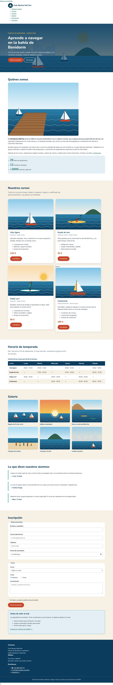
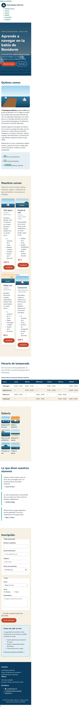

- UP
- UP3
- Criterios
- RA2 · 2f, 2h
- Duración
- 2 sesiones
- Agrupamiento
- Individual
- Entrega
- Aules · ZIP + URL del repositorio
- Tipo
- Desarrollo · formativa
Objetivos
- Aplicar
box-sizing: border-boxy explicar qué midewidth. - Controlar el espacio con márgenes y rellenos sin que los márgenes colapsen de forma inesperada.
- Convertir enlaces en botones con
display: inline-blocky estados accesibles. - Decorar con fondos múltiples, bordes, esquinas redondeadas y sombras (CE 2h).
- Inspeccionar el modelo de cajas con DevTools (CE 2f).
Recursos
- Punto de partida: tu PP 3.1. La serie entera trabaja sobre un único fichero HTML, la web del Club Náutico Mal Pas (descargar en ZIP), que no se modifica: cada práctica añade una capa a la misma hoja
css/estilos.css. - Teoría de la UP3, sección 6 (diapositivas 40 – 50).
- Ejemplo guiado EG 3.2 · Tarjetas de habitaciones (pasos 1 – 5).
- Laboratorio CSS: modelo de cajas, display y fondos, bordes y sombras.
- Plantilla LEEME-plantilla.md.
Resultado esperado
Así debe quedar la página al terminar esta práctica. Desplaza las capturas para verla entera.


1Continúa tu web
Copia la carpeta de tu práctica anterior como lmsgi/UP3/PP3.2/ en tu repositorio y sigue trabajando sobre la misma hoja css/estilos.css. No cambies el HTML. Si la práctica anterior no te funciona, pide al profesor su hoja de estilos para no quedarte atrás.
2Reinicio y ritmo vertical
Al principio del bloque de esta práctica, haz que todos los elementos (y sus ::before y ::after) usen border-box, quita el margen de body y evita que las imágenes se salgan de su caja:
*,
*::before,
*::after {
box-sizing: border-box;
}
img {
max-width: 100%;
height: auto;
}Para que los márgenes no colapsen de forma inesperada, deja los de títulos, párrafos y listas solo hacia abajo: margin-top: 0 y margin-bottom: 1rem. Prueba la diferencia entre content-box y border-box en el laboratorio del modelo de cajas.
3Contenedor y secciones
El HTML ya envuelve el contenido de cada bloque en .contenedor. Centra ese contenedor con un ancho máximo de 1100 px y 1rem de margen a cada lado en pantallas pequeñas:
.contenedor {
width: min(100% - 2rem, 1100px);
margin-inline: auto;
}Da a .seccion 4rem de relleno arriba y abajo (padding-block), el fondo arena a .seccion--alterna y limita el ancho de .seccion__intro a 60ch para que las líneas no sean demasiado largas.
4Portada con imagen de fondo
Pon la imagen img/portada.svg como fondo de .portada con un degradado oscuro encima para que el texto blanco cumpla el contraste. Añade siempre un color de respaldo:
.portada {
padding-block: 6rem;
background-color: var(--marino);
background-image: linear-gradient(rgb(11 60 93 / 88%), rgb(11 60 93 / 55%)), url("../img/portada.svg");
background-position: center;
background-size: cover;
color: var(--blanco);
}La ruta de url() es relativa al fichero CSS, no al HTML: por eso empieza por ../. Después pon el h1 en blanco con un ancho máximo de 16ch, el antetítulo en --sol y el texto en --marino-claro. ¿Qué especificidad necesitas para ganar a la regla .portada__antetitulo de la PP 3.1?
5Botones
Crea la clase .boton (enlaces «Reserva tu plaza», «Inscribirme» y el botón del formulario): display: inline-block, al menos 44 px de alto, relleno en em, borde de 2 px, border-radius: 999px, fondo coral, texto blanco sin subrayado y cursor: pointer. El button no hereda la fuente: dásela con font: 700 1rem/1.5 var(--fuente-titulos).
Añade los estados :hover (coral oscuro), :focus-visible (contorno --sol con outline-offset) y :active, y la variante .boton--secundario: fondo transparente y borde blanco, que al pasar el ratón se rellena de blanco con texto marino. No quites el contorno del foco. Compara inline, block e inline-block en el laboratorio de display.
6Tarjetas y galería
Convierte cada .tarjeta en una tarjeta: fondo blanco, borde de 1 px, border-radius: 16px y una sombra suave con box-shadow. Su imagen ocupa todo el ancho (display: block, width: 100%) con las esquinas superiores redondeadas, y el texto va en .tarjeta__cuerpo con relleno.
De momento, coloca dos tarjetas por fila con la técnica clásica (en la PP 3.4 la cambiarás por Flexbox):
.tarjeta {
display: inline-block;
width: 47%;
margin: 0 1.5% 1.5rem 0;
vertical-align: top;
}Haz lo mismo con .galeria__item, tres por fila (width: 31%), con las fotos redondeadas y el pie de foto en negrita. Pregunta para el LEEME.md: ¿por qué con width: 50% y sin margen no caben dos tarjetas por fila?
7Tabla, formulario y bloques
- Tabla:
width: 100%,border-collapse: collapse, relleno en las celdas, línea inferior y cabecera con fondo marino y texto blanco. La regla nueva de.horario thead thtiene la misma especificidad que la de la PP 3.1: ¿cuál gana y por qué? - Formulario: cada
fieldsetcon margen, relleno, borde y esquinas redondeadas; las etiquetas de.campoen bloque; los campos conwidth: 100%, relleno, borde,font: inherity un contorno visible en:focus. La casilla de privacidad y los radios no deben ocupar todo el ancho. - El
fieldset.opcionesde los radios no lleva borde. Comprueba que.opciones { border: 0; }no funciona y explica por qué necesitas.formulario .opciones. - Bloques: opiniones con borde izquierdo turquesa de 5 px; aviso de seguridad con borde discontinuo (
dashed) y fondo marino claro; cifras del club con fondo marino claro; cabecera con línea inferior; pie con fondo marino y texto claro; el enlace.marcasin subrayado.
8Mide en DevTools
Inspecciona una tarjeta y un botón y abre el diagrama del modelo de cajas (DevTools > Calculado). Anota en el LEEME.md contenido, relleno, borde y margen de cada uno y el ancho total que ocupan. Después cambia temporalmente el botón a box-sizing: content-box y explica qué cambia.
9Valida y entrega
0 errores en los validadores CSS y HTML. Commit con un mensaje claro, por ejemplo PP3.2: modelo de cajas.
Niveles de realización
Básico
Pasos 1 – 3, 5, 6 y 9.
Estándar
Todos los pasos, con las medidas del paso 8 explicadas.
Ampliación
Destaca la tarjeta «Catamarán» con outline y outline-offset usando .tarjeta:last-child, y explica en el LEEME.md por qué outline y box-shadow no cambian el tamaño de la caja y border sí.
Antes de entregar, comprueba que…
- Todos los elementos usan
border-boxy la página no tiene scroll horizontal a 1280 px. - El contenido está centrado con un ancho máximo de 1100 px.
- La portada tiene imagen de fondo con degradado y el texto blanco se lee bien.
- Los botones miden al menos 44 px de alto y tienen
:hover,:focus-visibley:active. - Tarjetas, opiniones, aviso y formulario tienen relleno, borde, radio o sombra.
- Los campos del formulario ocupan el ancho y se ve el foco.
- Validadores CSS y HTML: 0 errores.
- Declaración de uso de IA en
LEEME.md.
Entrega
Comprime la carpeta PP3.2 (con index.html, css/, img/ y LEEME.md) como PP3.2_Apellido_Nombre.zip, súbela a Aules y escribe en el comentario la URL de tu repositorio.
Uso de inteligencia artificial. Puedes usar asistentes de IA para entender un error o resolver una duda, pero no para hacer la práctica por ti. Si los usas, decláralo en el fichero LEEME.md de tu entrega (qué herramienta, para qué y qué cambiaste tú). Debes poder explicar y defender todo lo que entregues (instrumento IE6). Presentar código generado sin declararlo supone un 0 en la práctica (PD, apartado 6.5).
Evaluación
Práctica formativa de la serie progresiva de la UP3: no tiene nota propia, se revisa en clase con la lista de comprobación y prepara las prácticas calificables (PR 3.1 – 3.5) y el Proyecto 3. Trabaja el criterio 2f, 2h del RA2. El profesor puede pedirte que expliques cualquier regla de tu hoja (IE6).